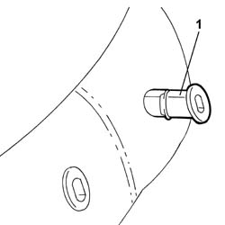
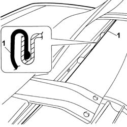
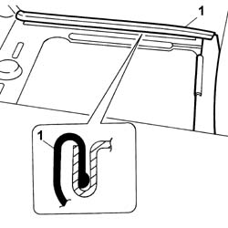
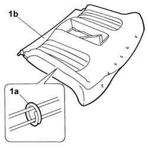

7050D31 Rear seat backrest cover - R.R. with backrest removed
- Path
- Procedures > 70 FITTINGS > 7050 REAR SEATS > 7050D REAR SEAT COVER/UPHOLSTERY > 7050D31 Rear seat backrest cover - R.R. with backrest removed
- Kind
- repair procedure (removal / refitting; the operation number is the code)
- Applies to
- all engines; all production periods
- Interactive page
- https://sloeber94.github.io/elrnDB-lThss/en/#/197504
Applies to: all engines; all production periods
 Removing
Removing
 Refitting
RefittingSee in Op. 7050A78 SKI HOLDER FLAP for rear seat backrest - R. and R.
1. Release the head restraint pins from the housing and remove them.

Applies to: all engines; all production periods
1. Release the cover along the entire perimeter of the backrest.

Applies to: all engines; all production periods
1. Release the cover along the inner perimeter of the ski holder flap.

Applies to: all engines; all production periods
1. Remove the retaining seals (1a) and separate the cover (1b) from the backrest upholstery.

Applies to: all engines; all production periods
Refitting
Removing- Check that the lining is not damaged.
- Fit the cover on the upholstery and secure it using the sealing rings.
 | Description | Code | Function |
|---|---|---|---|
. | Pliers for metal points | 1.878.017.001 | Fastening cover to upholstery |
- Fit the cover surround along the entire perimeter.
- Fit the head restraint pins in place.
See in Op. 7050A78 SKI HOLDER FLAP for rear seat backrest - R.and R.